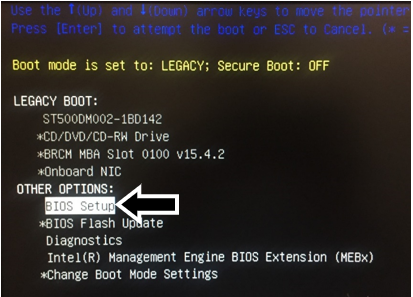
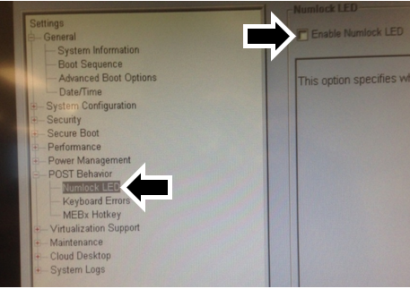
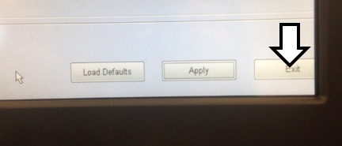
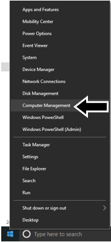
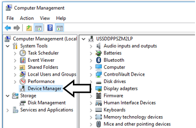
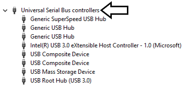
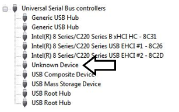

Dell OptiPlex XE3 Installation
Prerequisites
If installing an XE3 on a Panther with an LCD monitor, a USB 2.0 2-Port Passive Hub [CBL-02158] MUST be installed to enable LCD touch-screen functionality.
- The Dell XE3 requires a Windows 10 Image or higher.
- LCD Monitors were installed on Panthers 1404 and lower.
- LED Monitors are installed on Panthers 1405 and higher.
- LED Monitors do not require the USB 2.0 2-Port Passive Hub.
- OptiPlex XE3 + LCD Monitor > NEEDS the 2-Port Passive HUB [CBL-02158]
Parts and Materials Required
Time Required
Procedure
- Perform a Database Backup, if an existing database needs to be transferred to the new XE3.
- Power down the Panther System.
- Power down the PC.
- Disconnect all cables from the old PC.
- Remove the old PC from the Panther PC Bay.
- Place the XE3 into the Panther PC Bay.
 Connect the various cables to the XE3 PC.
Connect the various cables to the XE3 PC.
Note: Disregard label on CPU and use connections indicated in the image below.

- Verify any computer cables will not interfere with the Drawer lock.

- Create a Panther Image on a USB
- Install the Panther Image for Dell XE3
- Make sure to affix the Win10 License sticker (Certificate of Authentication) onto the Panther PC (if not already present)
- Restart the Panther PC.
- Immediately press the F12 key when the boot process begins to access the Boot Menu.
- Enable UEFI Boot mode, Secure Boot OFF.
- Use the arrow keys to select *Change Boot Mode Settings.
- Press Enter.
- Highlight UEFI Boot Mode, Secure Boot Off.
- Press Enter.
- Select Yes when asked DO YOU WISH TO PROCEED?
- Press Enter.
- Select Yes for Final Confirmation.
- Press Enter.
- Restart the PC.
- Use the arrow keys to select BIOS Setup.

- Press Enter.
- The BIOS Configuration window will now appear.
 | Note—If the BIOS Menu is locked: - Click the Unlock Button (at the bottom of the screen)
- Enter "gpservice" in the input field and click Enter.
- If "gpservice" is NOT accepted as a password, you will have to reset the BIOS password.
|
- Expand the POST Behavior section.
- Select Numlock LED.
- Un-check Enable Numlock LED.

- Expand the Security section and select Admin Password.
- Type gpservice as the password in both the New Password and Confirm Password fields.
 | Warning—MAKE SURE THAT NUMLOCK IS TURNED OFF. |
- Click OK.
- Click Exit.

- The PC will reboot into Windows.
| Note—Windows may need to be Activated. |
- On initial boot up, USB drivers will auto install.
- Set the PC clock.
- Reboot the PC once the USB drives are installed.
- Shutdown and Restart the PC
- Once the PC has booted in to Windows right-click on the Start menu and select Computer Management.

- Click on Device Manager in the Computer Management screen.

- Expand the Universal Serial Bus controllers section.

- To identify which USB cable is connected to the monitor, unplug all the USB cables then plug them back in one at a time.
- The USB cable connected to the Monitor will display as Unknown Device.
- You will briefly see a USB Device Not Recognized message displayed.

- With the Monitor USB cable identified, shutdown the PC.
- Unplug the Monitor USB cable.
- Use a piece of tape to clearly label the Monitor Cable for future reference.
- Then connect the monitor cable to one of the ports in the 2-Port Passive Hub [CBL-02158].
- Connect the 2-Port Passive Hub to the port labeled Monitor/Touchscreen in Part A: Step 7.
- Re-connect all other USB cables as per Part A: Step 7.
- Power on the Panther PC and verify that the monitor touch screen is functioning.
 button at the top of the page to send feedback, comments, or change requests.
button at the top of the page to send feedback, comments, or change requests.